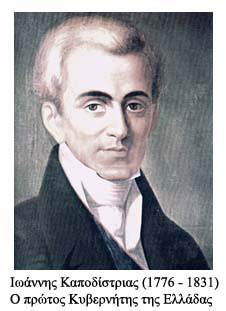

| Προβλήματα του νεοσύστατου ελληνικού κράτους  Το ανεξάρτητο ελληνικό κράτος άρχισε την ιστορική του διαδρομή το 1830. Οι πρώτες κυβερνήσεις δεν είχαν να αντιμετωπίσουν μόνο την αποκατάσταση των ζημιών, που ο πολυετής πόλεμος και η αναρχία είχαν προκαλέσει, αλλά κυρίως τις απαρχαιωμένες λειτουργίες της κοινωνίας και ειδικά στον οικονομικό χώρο. Την εποχή που τα κράτη της Δυτικής Ευρώπης περνούσαν το κατώφλι της βιομηχανικής επανάστασης και της οικονομικής ανάπτυξης, στην Ελλάδα η βιομηχανία ήταν ακόμη άγνωστη, οι μεταφορές διεξάγονταν με πρωτόγονα μέσα και οι καλλιέργειες «γίνονταν με μεθόδους οι οποίες ήταν γνωστές –οι περισσότερες– από την εποχή του Ησιόδου». |
||